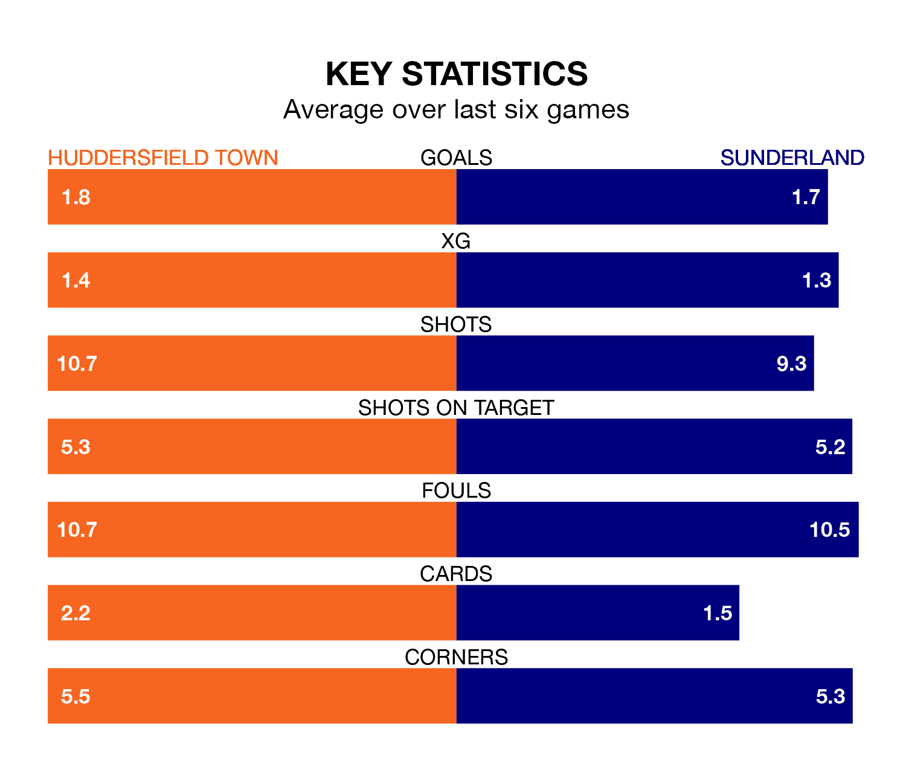

Sunderland travel to Huddersfield Town on late Wednesday in EFL Championship.
The visitors come into the game on the back of a win in their last match, having beaten Plymouth Argyle 3-1 at home, with goals from Jack Clarke, Pierre Ekwah and Jobe Bellingham.
The Terriers, meanwhile, lost their last match, 5-3 against Southampton, with their goals scored by David Kasumu, Sorba Thomas and Alex Matos.
Huddersfield are 21st in the table after 31 games, of which they have won six and drawn 13, earning 31 points.
Sunderland are 14 places ahead of Town in seventh, with 14 wins and five draws putting them on 47 points.
With 36 goals in 31 games so far this season, the Terriers are scoring at below the league average rate with 1.2 goals per game. And they are conceding more than average, letting in 52 goals at a rate of 1.7 per game.
The Black Cats, meanwhile, are average scorers, with 1.4 goals per game. They have conceded 1.1 goals per game.
In Clarke, the away team have one of the league's most on-form strikers so far this season. He has notched 14 goals in 31 appearances, to sit fourth in the scoring charts.
His goal rate of one every 197 minutes is quicker than that of Michal Helik, the hosts' top scorer with a goal every 324 minutes, and a total of eight goals in 29 games.
Huddersfield are in disappointing form in EFL Championship, with one win and three draws from their last six games.
With three wins and a draw over that period, Sunderland's form is better – they have taken 10 points from 18, compared to Huddersfield's six.
In the last three years, Huddersfield and Sunderland have played each other on three occasions. They won one each, and they drew once.
Their last meeting was on November 29, when Huddersfield won 2-1 away.
Wednesday's match will be refereed by Gavin Ward, who has taken charge of 16 EFL Championship games so far this season, issuing two red cards and booking 63 players. He has awarded two penalties.
The last Huddersfield game Ward refereed was a 2-1 home win against Queens Park Rangers on October 21. His last Sunderland match was their 2-1 win at home against Rotherham United on August 19.
Updated: 13:30 (UTC), 12/02/24